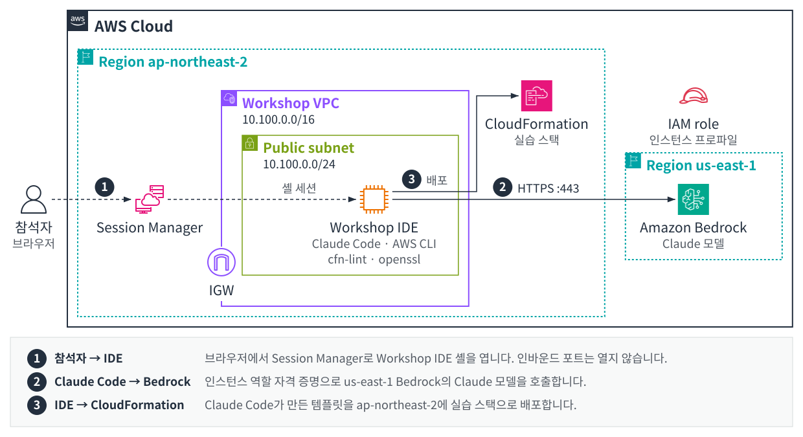

0. 환경 준비¶
실습은 Workshop IDE에서 진행합니다. Workshop IDE는 AWS Systems Manager Session Manager로만 접속하는 EC2 인스턴스로, 다음 도구가 미리 설치되어 있습니다.
- Claude Code(Node.js 22): Amazon Bedrock으로 호출하도록 설정되어 있습니다.
- 최신 AWS CLI v2,
cfn-lint,uv/uvx,jq,openssl,git

| 구성 요소 | 설명 |
|---|---|
| Session Manager | 브라우저에서 IDE 터미널을 엽니다. 인바운드 포트나 SSH 키가 필요 없습니다. |
| Workshop IDE (EC2) | Claude Code가 실행되는 곳입니다. 인스턴스 역할의 자격 증명으로 Bedrock을 호출하고 실습 스택을 만듭니다. |
Amazon Bedrock (us-east-1) |
Claude 모델을 호출합니다. 이 리전은 AWS_REGION 값으로 지정합니다. |
실습 리전 (ap-northeast-2) |
Lab에서 만드는 VPC, NLB 등이 생기는 리전입니다. 이 리전은 LAB_REGION 값으로 지정합니다. |
1. IDE 준비¶
이벤트 계정에는 ws-ai-nssa-ide 스택이 미리 배포되어 있습니다.
- 이벤트 페이지에서 Open AWS console을 누릅니다.
- CloudFormation 콘솔에서
ws-ai-nssa-ide스택의 Outputs 탭을 엽니다.SessionManagerUrl링크를 누르면 터미널이 열립니다.
실습 전용 계정에서만 진행하세요. IDE 인스턴스 역할에는 AdministratorAccess가 붙습니다. Lab에서 VPC·NLB·IAM 역할·Cloud WAN을 만들기 때문입니다. Claude Code의 권한 규칙과 hook은 실수를 줄여 줄 뿐 IAM 경계를 대신하지 못하므로, 다른 리소스가 있는 계정에는 이 템플릿을 배포하지 마세요.
- workshop-ide.yaml을 내려받습니다.
- CloudFormation 콘솔(
ap-northeast-2)에서 새 스택ws-ai-nssa-ide를 만듭니다.LabPermissions는admin을 고릅니다. Lab에서 VPC, NLB, IAM 역할을 만들기 때문입니다. IAM 리소스 생성 확인란에 체크합니다. IDE만 시험해 보려면bedrock-only를 고릅니다. 이 경우 역할에는 Session Manager와 Bedrock 권한만 있어 Lab 스택은 만들 수 없습니다. - 3–4분쯤 지나 스택이
CREATE_COMPLETE가 되면 Outputs의SessionManagerUrl을 엽니다. 도구 설치는 스택이 완료된 뒤에도 1분쯤 더 이어집니다. 아래 "3. 도구와 권한 확인"에서claude: command not found가 나오면cat /etc/motd에ws-ai-nssa IDE ready가 보일 때까지 기다립니다.
CLI로 배포할 수도 있습니다.
aws cloudformation deploy --region ap-northeast-2 \
--stack-name ws-ai-nssa-ide --template-file workshop-ide.yaml \
--parameter-overrides LabPermissions=admin \
--capabilities CAPABILITY_IAM
노트북에서 실습하려면 다음이 필요합니다.
- Claude Code
- AWS CLI v2와 실습 계정 자격 증명(profile)
cfn-lint(pip install cfn-lint또는uv tool install cfn-lint),jq,openssl
셸 설정 파일에 다음 환경 변수를 넣습니다.
export CLAUDE_CODE_USE_BEDROCK=1
export AWS_REGION=us-east-1 # Claude Code가 Bedrock을 호출하는 리전
export AWS_PROFILE=<실습 계정 profile>
export LAB_REGION=ap-northeast-2 # 실습 리소스 리전
2. 터미널 준비¶
Session Manager 터미널은 sh로 시작합니다. 아래 명령으로 bash로 바꾸고 작업 폴더로 이동합니다.
bash -l
cd ~
3. 도구와 권한 확인¶
claude --version
aws --version && cfn-lint --version && uv --version
echo "Bedrock: $AWS_REGION / Lab: $LAB_REGION"
aws sts get-caller-identity --region "$LAB_REGION"
리전이 두 개입니다
AWS_REGION=us-east-1은 Claude Code가 Bedrock을 호출하는 데 쓰입니다. 그런데 Claude Code가 실행하는 aws 명령도 이 환경 변수를 물려받습니다. 그래서 실습 리소스를 다루는 모든 aws 명령에는 --region "$LAB_REGION"을 붙입니다. 이 규칙은 Module 1에서 AGENTS.md에 적어 Claude가 따르게 합니다.
4. Claude Code 첫 실행¶
claude
처음 실행하면 테마와 폴더 신뢰(trust) 여부를 묻습니다. 기본값을 선택합니다. 세션이 열리면 다음을 입력해 Bedrock 연결을 확인합니다.
Claude Code에 입력:
/status
API provider에 Amazon Bedrock이 표시되는지 확인합니다. 모델은 /model로 바꿀 수 있습니다.
모델 호출이 실패할 때
AccessDeniedException: 실습 계정에서 해당 Anthropic 모델을 처음 쓰는 경우, Bedrock 콘솔의 모델 카탈로그에서 사용 사례 양식을 먼저 제출해야 할 수 있습니다.ValidationException(모델 ID 관련):/model에서 다른 모델을 선택하거나, 강사가 안내하는 inference profile ID를ANTHROPIC_MODEL환경 변수로 지정합니다.- 자격 증명 오류:
aws sts get-caller-identity --region "$AWS_REGION"이 성공하는지 확인합니다.
/exit 또는 Ctrl+D를 두 번 눌러 세션을 끝냅니다.
5. Starter kit 받기¶
Module 1과 이후 Lab에서 쓰는 설정 예시(CLAUDE.md, AGENTS.md, .claude/)입니다.
cd ~
curl -fsSLo starter-kit.zip "https://net232.github.io/ws-ai-nssa-workshop/static/starter-kit.zip"
unzip -q starter-kit.zip -d ~/starter-kit && ls -la ~/starter-kit
6. 정답 자료 받기¶
막혔을 때 비교해 볼 참고 산출물입니다. 조사 노트, 계획서, CloudFormation, 스크립트가 들어 있습니다. 먼저 직접 해 보고, 필요할 때만 엽니다.
cd ~
curl -fsSLo ws-solutions.zip "https://net232.github.io/ws-ai-nssa-workshop/static/ws-solutions.zip"
unzip -q ws-solutions.zip -d ~/ws-solutions && ls ~/ws-solutions
Success
Module 1에서 실습 폴더 ~/ws-lab을 만들고 이 starter kit을 복사합니다. Lab 1–4와 Lab 6은 모두 ~/ws-lab에서 진행합니다.